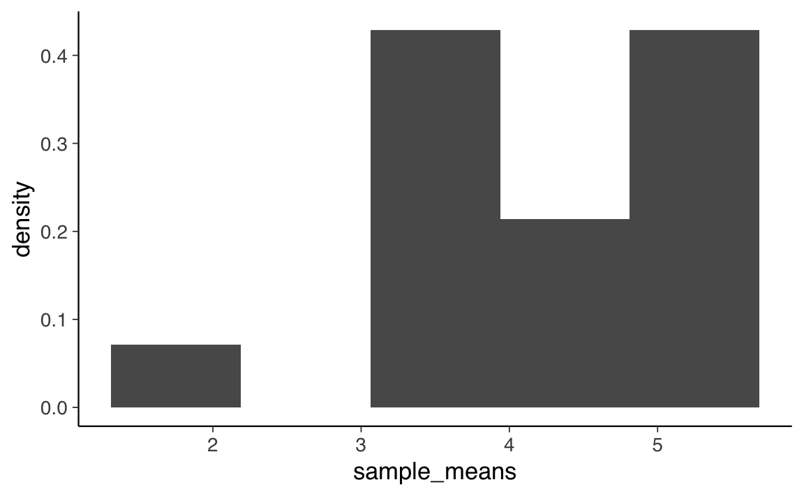
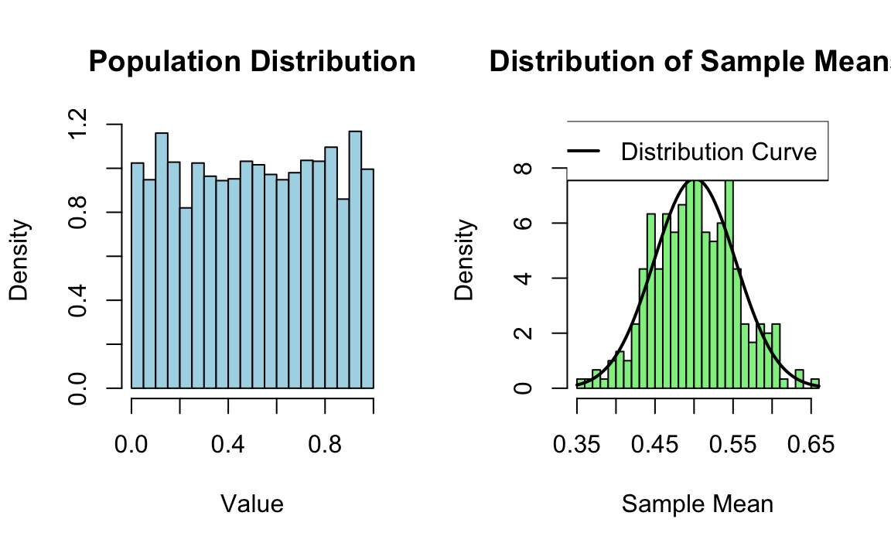
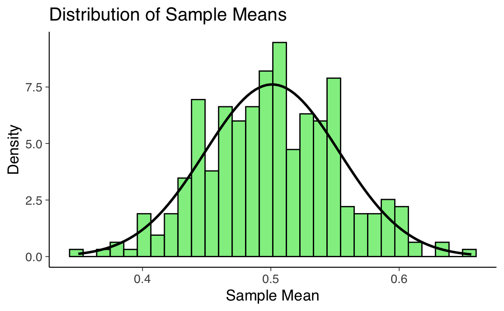
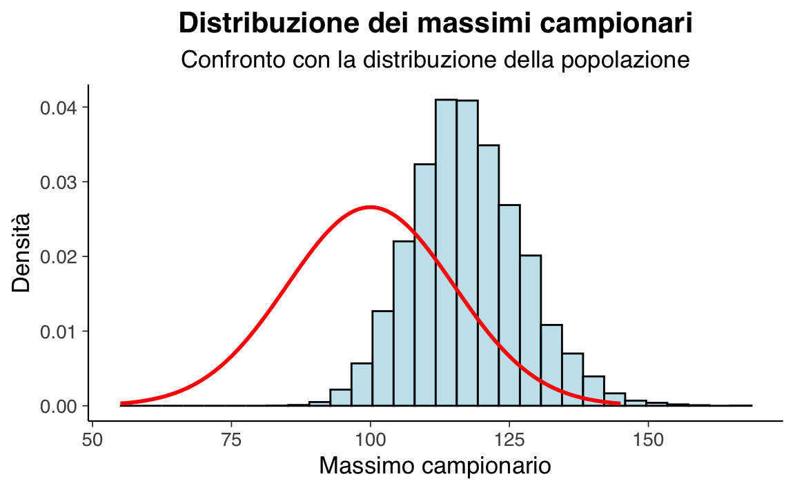
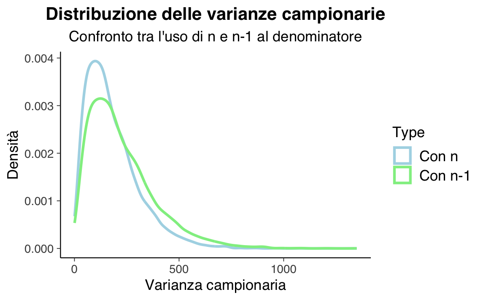

33 Stime, stimatori e parametri
- comprendere e analizzare come le stime dei parametri della popolazione variano da campione a campione;
- definire le nozioni di popolazione, campione, parametro, stima e stimatore;
- esplorare la connessione tra stime campionarie e parametri reali della popolazione;
- calcolare e interpretare il valore atteso e la varianza della media campionaria;
- utilizzare l’errore standard per rappresentare l’incertezza nelle stime dei parametri;
- comprendere la convergenza delle medie campionarie alla media della popolazione;
- applicare il teorema per approssimare distribuzioni campionarie con distribuzioni normali;
- analizzare la distribuzione campionaria di statistiche come la varianza e il valore massimo del campione.
- Leggere il capitolo Sampling Distributions of Estimators (Schervish & DeGroot, 2014).
33.1 Introduzione
In questo capitolo, approfondiremo il concetto di distribuzione campionaria che costituisce uno dei pilastri dell’inferenza statistica frequentista. La distribuzione campionaria ci permette di comprendere come le stime dei parametri della popolazione, come la media o la varianza, cambiano da campione a campione. In particolare, la distribuzione campionaria ci consente di stabilire delle proprietà probabilistiche delle stime campionarie, come ad esempio la loro media e la loro varianza. Queste proprietà verranno utilizzate per costruire gli strumenti fondamentali dell’inferenza frequentista: gli intervalli di fiducia e i test di ipotesi.
33.2 Popolazione e campioni
Nell’analisi dei dati, l’obiettivo spesso è comprendere una quantità specifica a livello di popolazione, ma in genere abbiamo accesso solo a un campione di osservazioni. La quantità sconosciuta che vogliamo determinare viene chiamata parametro. Quando usiamo i dati del campione per calcolare una misura di questo parametro, la misura ottenuta è chiamata stima, e la formula che utilizziamo per ottenerla è conosciuta come stimatore. In termini formali, uno stimatore è una funzione dei dati osservati, utilizzata per fornire un’approssimazione del parametro di interesse.
In pratica, quando analizziamo un campione di dati, il nostro obiettivo è inferire determinate proprietà della popolazione intera dalla quale il campione è stato tratto. Il parametro è l’indicatore numerico di queste proprietà, ma poiché spesso non possiamo calcolarlo direttamente sulla popolazione, ricorriamo alle osservazioni del campione per stimarlo. La stima, quindi, rappresenta il valore approssimato del parametro ottenuto dal campione, mentre lo stimatore è la regola o la formula matematica che usiamo per arrivare a questa approssimazione.
È importante riconoscere che le stime non corrispondono mai esattamente ai parametri che vogliamo comprendere. In altre parole, le stime sono solo approssimazioni del parametro a causa della natura aleatoria del campionamento.
33.2.1 La relazione tra stime e parametri
In questo capitolo, ci concentreremo sulla relazione tra le stime ottenute dai campioni e i parametri della popolazione, esplorando in particolare la connessione tra la media di un campione e la media della popolazione, denotata con \(\mu\). Il nostro obiettivo è capire e caratterizzare l’incertezza che deriva dalla natura aleatoria delle stime, e per farlo, adotteremo l’approccio frequentista, facendo uso dello strumento statistico chiamato distribuzione campionaria.
33.3 La Distribuzione Campionaria
Per illustrare il concetto di distribuzione campionaria, possiamo iniziare considerando un caso semplice e specifico: una popolazione finita di dimensioni ridotte. Sebbene stiamo esaminando un caso particolare, è fondamentale notare che le proprietà e i principi che analizzeremo in questo contesto sono perfettamente applicabili a popolazioni di qualsiasi dimensione.
La distribuzione campionaria ci dà una visione della variazione che potremmo aspettarci nelle stime derivate da diversi campioni estratti dalla stessa popolazione. Ogni volta che preleviamo un campione, otteniamo una stima diversa per il parametro di interesse (come la media). La distribuzione campionaria ci mostra come queste stime sono distribuite e ci aiuta a comprendere quanto siano affidabili.
In termini pratici, se vogliamo calcolare la media della popolazione, non possiamo farlo direttamente (a meno di non avere accesso all’intera popolazione). Invece, possiamo estrarre un campione casuale e calcolare la media del campione come stima di \(\mu\). Tuttavia, un altro campione fornirà una stima leggermente diversa. La distribuzione campionaria ci aiuta a capire quanto queste stime varino da campione a campione e ci fornisce un quadro completo dell’incertezza legata al processo di stima.
Nella simulazione seguente, ipotizziamo la seguente popolazione:
x <- c(2, 4.5, 5, 5.5)
x
#> [1] 2.0 4.5 5.0 5.5L’istogramma seguente descrive la distribuzione della popolazione.
ggplot(data.frame(x = x), aes(x)) +
geom_histogram(
bins = 5,
aes(y = after_stat(density))
)
Stampiamo gli intervalli utilizzati per l’istogramma.
# Calcolo degli intervalli e delle frequenze per l'istogramma
hist_data <- hist(x, breaks = 5, plot = FALSE)
# Stampa degli intervalli e delle frequenze relative
cat("Intervalli utilizzati per l'istogramma:", hist_data$breaks, "\n")
#> Intervalli utilizzati per l'istogramma: 2 2.5 3 3.5 4 4.5 5 5.5
cat("Frequenze relative utilizzate per l'istogramma:", hist_data$density, "\n")
#> Frequenze relative utilizzate per l'istogramma: 0.5 0 0 0 0.5 0.5 0.5Calcoliamo la media e la varianza della popolazione. Media:
mean_x <- mean(x) # Media della popolazione
mean_x
#> [1] 4.25Varianza:
Consideriamo tutti i possibili campioni di dimensione \(n = 2\) che possono essere estratti dalla popolazione rappresentata dal vettore x. Per generare questi campioni, utilizziamo la funzione expand.grid in R, che consente di creare tutte le combinazioni possibili di valori, includendo le ripetizioni.
Il risultato sarà un data frame con 16 righe e 2 colonne, dove ogni riga rappresenta una coppia possibile di valori estratti dal vettore x. Questo risultato è in linea con il principio del calcolo combinatorio: quando selezioniamo \(n\) elementi da un insieme di \(k\) elementi e permettiamo ripetizioni, il numero totale di combinazioni è dato da \(k^n\). Nel nostro caso, con \(k = 4\) e \(n = 2\), otteniamo:
\[ 4^2 = 16 \text{ combinazioni}. \]
Utilizzando expand.grid, possiamo verificare questo risultato in R:
# Generazione delle combinazioni con ripetizione
samples <- expand.grid(x, x)
# Visualizzazione del risultato
print(samples)
#> Var1 Var2
#> 1 2.0 2.0
#> 2 4.5 2.0
#> 3 5.0 2.0
#> 4 5.5 2.0
#> 5 2.0 4.5
#> 6 4.5 4.5
#> 7 5.0 4.5
#> 8 5.5 4.5
#> 9 2.0 5.0
#> 10 4.5 5.0
#> 11 5.0 5.0
#> 12 5.5 5.0
#> 13 2.0 5.5
#> 14 4.5 5.5
#> 15 5.0 5.5
#> 16 5.5 5.5Il data frame risultante mostrerà tutte le possibili coppie \((x_1, x_2)\), dove \(x_1\) e \(x_2\) possono essere scelti indipendentemente dalla popolazione \(x = \{2, 4.5, 5, 5.5\}\).
Per calcolare la media di ogni campione di ampiezza \(n = 2\), possiamo utilizzare la funzione rowMeans, che calcola la media per ogni riga di una matrice. In questo modo, otteniamo un vettore contenente la media di ciascuna coppia di valori. Questo insieme di valori costituisce la distribuzione campionaria delle medie dei campioni di ampiezza \(n = 2\) che possono essere estratti dalla popolazione x.
Una rappresentazione grafica della distribuzione campionaria delle medie dei campioni di ampiezza \(n = 2\) che possono essere estratti dalla popolazione x è fornita qui sotto.
# Istogramma delle medie campionarie
ggplot(data.frame(sample_means), aes(x = sample_means)) +
geom_histogram(
bins = 5,
aes(y = after_stat(density))
)
Mostriamo qui nuovamente la lista di tutti i possibili campioni di ampiezza 2 insieme alla media di ciascun campione.
# Creare un data frame con i campioni e le loro medie
df <- data.frame(
Samples = apply(samples, 1, paste, collapse = ", "),
x_bar = rowMeans(samples)
)
print(df)
#> Samples x_bar
#> 1 2, 2 2.00
#> 2 4.5, 2 3.25
#> 3 5, 2 3.50
#> 4 5.5, 2 3.75
#> 5 2, 4.5 3.25
#> 6 4.5, 4.5 4.50
#> 7 5, 4.5 4.75
#> 8 5.5, 4.5 5.00
#> 9 2, 5 3.50
#> 10 4.5, 5 4.75
#> 11 5, 5 5.00
#> 12 5.5, 5 5.25
#> 13 2, 5.5 3.75
#> 14 4.5, 5.5 5.00
#> 15 5, 5.5 5.25
#> 16 5.5, 5.5 5.50Procediamo ora al calcolo della media della distribuzione campionaria delle medie di campioni di ampiezza \(n = 2\) che possono essere estratti dalla popolazione x.
# Calcolare la media delle medie campionarie
mean(sample_means)
#> [1] 4.25Si noti che questo valore coincide con la media della popolazione. In generale, infatti, possiamo dire quanto segue.
33.4 Valore Atteso della Media Campionaria
Il valore atteso della media campionaria è una proprietà fondamentale in statistica. Supponiamo che \(X_1, X_2, \ldots, X_n\) siano variabili aleatorie indipendenti e identicamente distribuite (iid), con valore atteso \(\mu\) e varianza \(\sigma^2\). La media campionaria è definita come:
\[ \bar{X} = \frac{1}{n} \sum_{i=1}^n X_i. \]
Vogliamo dimostrare che il valore atteso della media campionaria \(\mathbb{E}(\bar{X})\) coincide con il valore atteso delle singole variabili, cioè \(\mu\).
33.4.1 Dimostrazione
Applichiamo le proprietà della speranza matematica per calcolare \(\mathbb{E}(\bar{X})\):
\[ \begin{align*} \mathbb{E}(\bar{X}) & = \mathbb{E}\left(\frac{1}{n} \sum_{i=1}^n X_i\right) & \text{(definizione di media campionaria)} \\ & = \frac{1}{n} \mathbb{E}\left(\sum_{i=1}^n X_i\right) & \text{(linearità della speranza)} \\ & = \frac{1}{n} \sum_{i=1}^n \mathbb{E}(X_i) & \text{(speranza della somma)} \\ & = \frac{1}{n} \sum_{i=1}^n \mu & \text{(tutte le $X_i$ hanno valore atteso $\mu$)} \\ & = \frac{1}{n} \cdot n \cdot \mu & \text{(semplificazione della somma)} \\ & = \mu. \end{align*} \]
33.4.2 Interpretazione
Abbiamo dimostrato che il valore atteso della media campionaria è uguale al valore atteso delle singole variabili. In termini pratici, ciò implica che la media campionaria è un stimatore non distorto del valore atteso della popolazione: anche se la media campionaria può variare a seconda del campione, in media si avvicina sempre al valore atteso della popolazione, \(\mu\).
Questa proprietà è una delle basi della statistica inferenziale. La media campionaria è uno degli stimatori più utilizzati in pratica proprio perché, oltre a essere non distorta, presenta altre proprietà utili, come l’efficienza (soprattutto per \(n\) grande).
33.5 Varianza della media campionaria
Dato che le variabili \(X_1, X_2, \ldots, X_n\) sono indipendenti ed identicamente distribuite (iid) con valore atteso \(\mu\) e varianza \(\sigma^2\), possiamo calcolare la varianza della media campionaria \(\bar{X}\) come segue:
\[ \begin{align*} \text{Var}(\bar{X}) & = \text{Var}\left(\frac{1}{n} \sum_{i=1}^n X_i\right) \\ & = \frac{1}{n^2} \text{Var}\left(\sum_{i=1}^n X_i\right) \\ & = \frac{1}{n^2} \sum_{i=1}^n \text{Var}(X_i) \quad \text{(dato che le $X_i$ sono indipendenti, i termini incrociati si annullano)} \\ & = \frac{1}{n^2} \sum_{i=1}^n \sigma^2 \\ & = \frac{1}{n^2} \cdot n \cdot \sigma^2 \\ & = \frac{\sigma^2}{n} \end{align*} \]
Quindi, la varianza della media campionaria di \(n\) variabili iid è uguale alla varianza di ciascuna variabile singola divisa per \(n\), che in questo caso è \(\sigma^2/n\).
Questo risultato riflette un’importante proprietà statistica:
- all’aumentare di \(n\), la varianza della media campionaria diminuisce, rendendo la media campionaria una stima più precisa del valore atteso \(\mu\). La riduzione della varianza è proporzionale a \(1/n\), quindi raddoppiare il campione riduce la varianza della media campionaria di un fattore 2.
In conclusione, la formula \(\text{Var}(\bar{X}) = \frac{\sigma^2}{n}\) mostra che la precisione della media campionaria aumenta con la dimensione del campione, poiché la varianza diminuisce. Questo principio è alla base dell’importanza di campioni più grandi nella stima statistica.
33.5.1 Applicazione
Analizziamo l’esempio in dettaglio per comprendere meglio i concetti relativi alle medie campionarie e al loro rapporto con la popolazione.
33.5.1.1 Varianza delle Medie Campionarie
La varianza delle medie campionarie, calcolata empiricamente, può essere ottenuta direttamente dai dati:
Questo calcolo riflette la formula per la varianza della media campionaria, dove il fattore \((\text{length}(x) - 1) / \text{length}(x)\) corregge per il fatto che stiamo lavorando con una popolazione finita. In alternativa, possiamo calcolare lo stesso valore prendendo la varianza delle medie di tutti i campioni (16 in questo caso):
Entrambi i calcoli forniscono risultati coerenti con la teoria, dimostrando che la varianza delle medie campionarie è inferiore a quella della popolazione.
33.5.1.2 Analisi di un Campione Specifico
Prendiamo ora un campione particolare dalla popolazione:
-
Media del Campione
La media del campione viene calcolata come segue:
La media campionaria (\(\bar{x} = 5.25\)) è diversa dalla media della popolazione (\(\mu = 4.25\)), come è atteso per un singolo campione.
-
Deviazione Standard del Campione
La deviazione standard del campione è calcolata utilizzando la formula corretta per la varianza campionaria:
Anche la deviazione standard del campione è diversa dalla deviazione standard della popolazione:
Questo risultato riflette il fatto che un singolo campione non riproduce perfettamente le proprietà della popolazione, ma le medie campionarie aggregate tendono a rifletterle meglio.
33.5.2 Risultati Centrali
Dall’analisi delle medie campionarie emergono due risultati fondamentali:
-
Media delle Medie Campionarie e Media della Popolazione
La media della distribuzione delle medie campionarie coincide con la media della popolazione:\[ \mathbb{E}(\bar{X}_n) = \mu. \]
-
Varianza delle Medie Campionarie
La varianza delle medie campionarie è inferiore alla varianza della popolazione ed è pari a:\[ \mathbb{V}(\bar{X}_n) = \frac{\sigma^2}{n}. \]
Questi risultati dimostrano empiricamente come le medie campionarie rappresentino una stima non distorta della media della popolazione e diventino più precise all’aumentare della dimensione del campione \(n\).
33.5.3 Forma della Distribuzione delle Medie Campionarie
Il comportamento della distribuzione delle medie campionarie dipende dalla distribuzione della popolazione:
- Distribuzione Normale: Se la popolazione segue una distribuzione normale, le medie campionarie seguiranno anch’esse una distribuzione normale, indipendentemente dalla dimensione del campione.
- Distribuzione Non Normale: Se la popolazione non segue una distribuzione normale, il Teorema del Limite Centrale garantisce che, per dimensioni del campione sufficientemente grandi, la distribuzione delle medie campionarie tenderà a una distribuzione normale.
In conclusione, l’analisi delle medie campionarie ci fornisce una comprensione fondamentale dei principi statistici alla base dell’inferenza. La convergenza delle medie campionarie alla media della popolazione e la riduzione della loro varianza con l’aumentare di \(n\) sono concetti chiave che supportano molte tecniche di stima e test statistici. Inoltre, il ruolo del Teorema del Limite Centrale evidenzia la robustezza di questi principi, indipendentemente dalla forma della distribuzione di partenza.
33.6 Errore standard e rappresentazione dell’incertezza inferenziale
Nella statistica inferenziale, l’errore standard è una misura frequentemente utilizzata per rappresentare l’incertezza legata a un parametro stimato, conosciuta anche come incertezza inferenziale. L’errore standard quantifica quanto possa variare la stima di una statistica da un campione all’altro; un errore standard minore indica una stima più precisa, mentre uno maggiore implica maggiore incertezza. Spesso, le rappresentazioni grafiche includono gli errori standard nella forma di “media più o meno uno (o due) errori standard.” Questa espressione fornisce una gamma di valori entro cui è plausibile che ricada il valore vero del parametro della popolazione.
L’uso dell’errore standard nei grafici non è soltanto una convenzione; esso è uno strumento per quantificare e visualizzare l’incertezza inferenziale. Contribuisce alla comprensione dell’affidabilità delle stime ottenute dai dati campionari, permettendo di valutare quanto le stime possano variare se si prendesse un altro campione dalla stessa popolazione. Tuttavia, è importante notare che questo utilizzo dell’errore standard può essere problematico (Ward & Mann, 2022).
33.7 Legge dei Grandi Numeri
La Legge dei Grandi Numeri (LLN) è un principio fondamentale della teoria delle probabilità che stabilisce come, incrementando il numero \(n\) di osservazioni, la media campionaria \(\bar{X}_n\) tenda asintoticamente alla media teorica \(\mu\). La LLN si articola in due varianti: la versione “forte” e quella “debole”, le quali differiscono per il tipo di convergenza verso la media attesa.
33.7.1 Versione Forte della Legge dei Grandi Numeri (SLLN)
La SLLN afferma che la media campionaria \(\bar{X}_n\) converge quasi certamente alla media teorica \(\mu\), ovvero la convergenza avviene con probabilità 1. Questo implica che, per quasi ogni possibile sequenza di eventi nell’insieme campionario \(S\), \(\bar{X}_n(s)\) tende a \(\mu\), ad eccezione di un insieme di eventi \(B_0\) la cui probabilità è zero. In termini tecnici, si dice che \(\bar{X}_n\) converge a \(\mu\) “quasi certamente”.
33.7.2 Versione Debole della Legge dei Grandi Numeri (WLLN)
La WLLN afferma che, per ogni \(\epsilon > 0\), la probabilità che la media campionaria \(\bar{X}_n\) si discosti da \(\mu\) di una quantità maggiore di \(\epsilon\) tende a zero all’aumentare di \(n\). Questo fenomeno è definito come convergenza in probabilità verso la media teorica \(\mu\).
33.7.3 Implicazioni e Applicazioni
La Legge dei Grandi Numeri riveste un ruolo cruciale nel campo delle simulazioni, della statistica e, più in generale, nelle discipline scientifiche. La generazione di dati attraverso numerose repliche indipendenti di un esperimento, sia in ambito simulativo che empirico, implica l’utilizzo della media campionaria come stima affidabile della media teorica della variabile di interesse. In pratica, la LLN fornisce una base teorica per l’affidabilità delle stime medie ottenute da grandi campioni di dati, sottolineando come, a fronte di un numero elevato di osservazioni, le fluttuazioni casuali tendano ad annullarsi, convergendo verso un valore stabile e prevedibile.
Esempio 33.1 Siano \(X_1, X_2, \ldots\) variabili aleatorie indipendenti e identicamente distribuite secondo una distribuzione di Bernoulli con parametro \(1/2\). Interpretando gli \(X_j\) come indicatori di “Testa” in una sequenza di lanci di una moneta equa, \(\bar{X}_n\) rappresenta la proporzione di “Testa” dopo \(n\) lanci. La Legge Forte dei Grandi Numeri (SLLN) afferma che, con probabilità 1, la sequenza di variabili aleatorie \(\bar{X}_1, \bar{X}_2, \bar{X}_3, \ldots\) convergerà a \(1/2\) quando si cristallizza in una sequenza di numeri reali. Matematicamente parlando, esistono scenari improbabili come una sequenza infinita di “Testa” (HHHHHH…) o sequenze irregolari come HHTHHTHHTHHT…, ma queste hanno una probabilità collettiva di zero di verificarsi. La Legge Debole dei Grandi Numeri (WLLN) stabilisce che, per ogni \(\epsilon > 0\), la probabilità che \(\bar{X}_n\) sia distante più di \(\epsilon\) da \(1/2\) può essere resa arbitrariamente piccola aumentando \(n\).
Come illustrazione, abbiamo simulato sei sequenze di lanci di una moneta equa e, per ciascuna sequenza, abbiamo calcolato \(\bar{X}_n\) in funzione di \(n\). Ovviamente, nella realtà non possiamo effettuare un numero infinito di lanci, quindi ci siamo fermati dopo 300 lanci. Il grafico seguente mostra \(\bar{X}_n\) in funzione di $ n $ per ciascuna delle sei sequenze. All’inizio, notiamo una certa variazione nella proporzione cumulativa di “Testa”. Tuttavia, con l’aumentare del numero di lanci, la varianza $ ({X}_n) $ diminuisce progressivamente e \(\bar{X}_n\) tende a \(1/2\).
# Numero di sequenze
num_sequences <- 6
# Numero di lanci
num_tosses <- 300
# Creare un data frame per contenere i risultati
results <- data.frame(Toss = numeric(), Proportion = numeric(), Sequence = character())
# Loop attraverso ciascuna sequenza
for (i in 1:num_sequences) {
# Generare una sequenza di lanci di moneta equa (Testa=1, Croce=0)
coin_tosses <- sample(c(0, 1), num_tosses, replace = TRUE)
# Calcolare la proporzione cumulativa di Teste
running_proportion <- cumsum(coin_tosses) / seq_along(coin_tosses)
# Aggiungere i risultati al data frame
results <- rbind(
results,
data.frame(
Toss = seq_along(coin_tosses),
Proportion = running_proportion,
Sequence = paste("Sequence", i)
)
)
}
# Creare il grafico con ggplot2
ggplot(results, aes(x = Toss, y = Proportion, color = Sequence)) +
geom_line() +
geom_hline(yintercept = 0.5, color = "red", linetype = "dashed") +
labs(
x = "Number of Tosses",
y = "Running Proportion of Heads",
title = "Running Proportion of Heads in Six Sequences of Fair Coin Tosses",
color = "Sequence"
) 
33.8 Teorema del Limite Centrale
Il teorema del limite centrale è un risultato fondamentale in statistica che è stato dimostrato per la prima volta da Laplace nel 1812. Esso fornisce una spiegazione matematica per il motivo per cui la distribuzione normale appare così frequentemente nei fenomeni naturali. Ecco la formulazione essenziale.
Definizione 33.1 Supponiamo di avere una sequenza di variabili aleatorie indipendenti ed identicamente distribuite (i.i.d.), \(Y = Y_1, \dots, Y_i, \ldots, Y_n\), ciascuna con valore atteso \(\mathbb{E}(Y_i) = \mu\) e deviazione standard \(SD(Y_i) = \sigma\). Definiamo una nuova variabile casuale come la media aritmetica di queste variabili:
\[ Z = \frac{1}{n} \sum_{i=1}^n Y_i. \]
Allora, quando \(n\) tende all’infinito, la distribuzione di \(Z\) convergerà a una distribuzione normale con media \(\mu\) e deviazione standard ridotta di un fattore \(\frac{1}{\sqrt{n}}\):
\[ p_Z(z) \rightarrow \mathcal{N}\left(z \ \Bigg| \ \mu, \, \frac{\sigma}{\sqrt{n}}\right). \]
33.8.1 Significato e generalizzazione
Il TLC non si applica solo alle variabili casuali con la stessa distribuzione, ma può essere esteso a variabili casuali indipendenti con aspettative e varianze finite. La potenza del teorema sta nella sua capacità di descrivere fenomeni che sono il risultato di molteplici effetti additivi indipendenti. Anche se questi effetti possono avere distribuzioni diverse, la loro somma tende a una distribuzione normale.
Ad esempio, l’altezza degli esseri umani adulti può essere vista come la somma di molti fattori genetici e ambientali indipendenti. Indipendentemente dalla distribuzione individuale di questi fattori, la loro combinazione tende a formare una distribuzione normale. Questa universalità rende la distribuzione normale una buona approssimazione per molti fenomeni naturali.
Esempio 33.2 Per visualizzare il TLC in azione, si può condurre una simulazione. Immaginiamo una popolazione distribuita in maniera uniforme. Estraiamo 300 campioni di dimensione \(n\) = 30 da questa popolazione e osserviamo come la distribuzione campionaria di tali medie converga a una distribuzione normale. Questa simulazione fornirà un’illustrazione concreta dell’efficacia del TLC nell’approssimare distribuzioni reali.
# Set the random seed for reproducibility
set.seed(42)
# Generate a non-normally distributed population
population <- runif(5000, min = 0, max = 1)
# Step 1: Plot the histogram of the population using ggplot2
ggplot(data.frame(population), aes(x = population)) +
geom_histogram(
aes(y = after_stat(density)),
bins = 30, fill = "lightblue", color = "black"
) +
labs(title = "Population Distribution", x = "Value", y = "Density")
# Step 2 and 3: Draw random samples and calculate sample means
sample_size <- 30
num_samples <- 300
# Empty vector to store sample means
sample_means <- c()
for (i in 1:num_samples) {
# Take a random sample
sample <- sample(population, size = sample_size, replace = TRUE)
# Calculate the mean of the sample
sample_means[i] <- mean(sample)
}
# For sample
x_bar <- mean(sample_means)
std <- sd(sample_means)
print('Sample Mean and Variance')
#> [1] "Sample Mean and Variance"
print(x_bar)
#> [1] 0.501
print(std**2)
#> [1] 0.002745# Step 4: Plot the histogram of sample means using ggplot2
ggplot(data.frame(sample_means), aes(x = sample_means)) +
geom_histogram(
aes(y = after_stat(density)),
bins = 30, fill = "lightgreen", color = "black"
) +
stat_function(
fun = dnorm, args = list(mean = x_bar, sd = std), color = "black", size = 1
) +
labs(
title = "Distribution of Sample Means", x = "Sample Mean", y = "Density"
) +
theme(legend.position = "top") 
In conclusione, il teorema del limite centrale (TLC) stabilisce che, a meno che non si stia lavorando con campioni estremamente piccoli, è possibile approssimare con buona precisione la distribuzione campionaria della media dei campioni utilizzando la distribuzione Normale. Questo vale indipendentemente dalla forma specifica della distribuzione della popolazione da cui sono tratti i campioni. In altre parole, quando si lavora con campioni di dimensioni sufficienti, il TLC offre una formula concreta per descrivere la forma della distribuzione campionaria della media dei campioni. Ciò avviene anche se non si hanno informazioni dettagliate sulla popolazione, come la media \(\mu\) e la deviazione standard \(\sigma\), ed è espresso dalla relazione \(\bar{X} \sim \mathcal{N}(\mu, \sigma/\sqrt{n})\).
33.9 Distribuzioni campionarie di altre statistiche
Quando lavoriamo con le statistiche campionarie, non sempre la loro distribuzione segue quella della popolazione di origine. Due esempi interessanti sono la distribuzione campionaria del massimo e quella della varianza. Comprendere queste distribuzioni ci permette di valutare meglio il comportamento di stimatori particolari, specialmente in contesti in cui si analizzano eventi estremi o si cercano stime precise dei parametri della popolazione.
33.9.1 Distribuzione campionaria del massimo
33.9.1.1 Teoria e concetti chiave
Definizione: Se consideriamo un campione di dimensione \(n\) estratto da una popolazione, il massimo campionario, indicato con \[ M = \max\{X_1, X_2, \dots, X_n\}, \] è una variabile casuale che dipende dalla distribuzione dei singoli \(X_i\).
-
Proprietà:
- La distribuzione del massimo campionario tende a essere asimmetrica e “spostata” verso destra rispetto alla distribuzione della popolazione. Anche se la popolazione segue una distribuzione normale, la distribuzione del massimo non è normale.
- Il valore atteso del massimo \(E[M]\) risulta essere maggiore della media \(\mu\) della popolazione, in quanto il massimo tende a selezionare valori estremi (cioè, i valori più elevati) all’interno del campione.
- La distribuzione del massimo campionario tende a essere asimmetrica e “spostata” verso destra rispetto alla distribuzione della popolazione. Anche se la popolazione segue una distribuzione normale, la distribuzione del massimo non è normale.
-
Implicazioni pratiche:
- Questo tipo di distribuzione è particolarmente utile nello studio di fenomeni estremi (ad esempio, eventi rari o catastrofici) e nella modellizzazione delle code delle distribuzioni.
- La teoria degli estremi, che si basa su limiti di distribuzioni di massimi (o minimi), si fonda su queste osservazioni e ha applicazioni in finanza, ingegneria e scienze ambientali.
33.9.1.2 Esempio pratico in R
Nel seguente esempio simuliamo 10.000 esperimenti, ognuno dei quali consiste in un campione di 5 osservazioni estratte da una popolazione normalmente distribuita con media \(\mu = 100\) e deviazione standard \(\sigma = 15\). In ciascun esperimento calcoliamo il massimo campionario e lo confrontiamo con la densità della distribuzione originale:
# Impostazioni iniziali
mu <- 100
sigma <- 15
x <- seq(mu - 3 * sigma, mu + 3 * sigma, length.out = 100)
y <- dnorm(x, mean = mu, sd = sigma)
# Simulazione di 10.000 esperimenti con campioni di 5 osservazioni
set.seed(123) # Per riproducibilità
sample_maxes <- replicate(10000, max(rnorm(5, mean = mu, sd = sigma)))
# Creare il data frame per il grafico
data <- data.frame(SampleMaxes = sample_maxes)
density_data <- data.frame(x = x, y = y)
# Grafico con ggplot2
library(ggplot2)
ggplot(data, aes(x = SampleMaxes)) +
geom_histogram(
aes(y = after_stat(density)),
bins = 30,
fill = "lightblue",
color = "black",
alpha = 0.7
) +
geom_line(data = density_data, aes(x = x, y = y), size = 1, color = "red") +
labs(
title = "Distribuzione dei massimi campionari",
subtitle = "Confronto con la distribuzione della popolazione",
x = "Massimo campionario",
y = "Densità"
) +
theme(
plot.title = element_text(hjust = 0.5, face = "bold"),
plot.subtitle = element_text(hjust = 0.5)
)
Cosa osservare nel grafico:
- La distribuzione dei massimi campionari (istogramma) è spostata verso destra rispetto alla distribuzione normale della popolazione (curva rossa).
- Questo shift verso valori più elevati conferma che il massimo campionario tende a essere superiore alla media della popolazione.
33.9.2 Distribuzione campionaria della varianza
33.9.2.1 Teoria e concetti chiave
-
Stima della varianza:
La varianza della popolazione è un parametro fondamentale, ma stimarla correttamente richiede attenzione. Due formule comuni per la varianza campionaria sono:- Con denominatore \(n\): \[ S^2 = \frac{1}{n} \sum_{i=1}^n (Y_i - \bar{Y})^2 \] Questa definizione porta ad una stima distorta della varianza della popolazione, poiché il calcolo utilizza la media campionaria, che ha già “consumato” un grado di libertà.
- Con denominatore \(n-1\): \[ S^2 = \frac{1}{n-1} \sum_{i=1}^n (Y_i - \bar{Y})^2 \] Questa formula produce uno stimatore non distorto della varianza della popolazione, poiché corregge la perdita di un grado di libertà.
-
Concetto di distorsione:
Uno stimatore \(\hat{\theta}\) è definito non distorto se: \[ E[\hat{\theta}] = \theta, \] cioè il valore atteso dello stimatore coincide con il parametro reale \(\theta\). Nel caso della varianza, l’uso di \(n-1\) garantisce che \(E[S^2] = \sigma^2\).
33.9.2.2 Esempio pratico in R
Simuliamo 10.000 esperimenti, ciascuno con 5 osservazioni, e confrontiamo le distribuzioni delle varianze calcolate con i due metodi:
# Simulare 10.000 esperimenti con 5 osservazioni per ciascun esperimento
set.seed(123) # Per riproducibilità
# Attenzione: nella simulazione qui riportata, è importante usare lo stesso
# campione per calcolare la varianza con n e con n-1. Quindi simulando un
# campione e calcolando entrambe le varianze sullo stesso campione.
# Funzione che genera un campione e restituisce le due varianze
calc_vars <- function(n = 5, mu = 100, sigma = 15) {
sample_data <- rnorm(n, mean = mu, sd = sigma)
var_n = sum((sample_data - mean(sample_data))^2) / n
var_n_minus_1 = var(sample_data) # R utilizza n-1 per default
return(c(var_n, var_n_minus_1))
}
# Simulazione: matrice con due colonne (prima per n, seconda per n-1)
vars_matrix <- replicate(10000, calc_vars())
sample_vars_n <- vars_matrix[1, ]
sample_vars_n_minus_1 <- vars_matrix[2, ]
# Creare i data frame per i grafici
data_n <- data.frame(SampleVars = sample_vars_n, Type = "Con n")
data_n_minus_1 <- data.frame(SampleVars = sample_vars_n_minus_1, Type = "Con n-1")
combined_data <- rbind(data_n, data_n_minus_1)
# Grafico con curve di densità sovrapposte
ggplot(combined_data, aes(x = SampleVars, color = Type)) +
geom_density(size = 1.1) +
labs(
title = "Distribuzione delle varianze campionarie",
subtitle = "Confronto tra l'uso di n e n-1 al denominatore",
x = "Varianza campionaria",
y = "Densità"
) +
theme(
plot.title = element_text(hjust = 0.5, face = "bold"),
plot.subtitle = element_text(hjust = 0.5)
) +
scale_color_manual(values = c("Con n" = "lightblue", "Con n-1" = "lightgreen"))
Osservazioni:
Il grafico mostra due distribuzioni: quella ottenuta utilizzando \(n\) (che, come atteso, tende a sottostimare la varianza) e quella ottenuta utilizzando \(n-1\) (che è non distorta).
-
Confrontando le medie delle due simulazioni, possiamo verificare che:
Questo esercizio evidenzia come l’uso di \(n-1\) corregga la distorsione introdotta dal calcolo della media campionaria.
33.9.3 Errore della stima e stimatori non distorti
33.9.3.1 Approfondimento teorico
-
Errore della stima:
L’errore della stima è la differenza tra il valore stimato \(\hat{\theta}\) e il parametro vero \(\theta\) della popolazione. Formalmente, per uno stimatore \(\hat{\theta}\) abbiamo:\[ \text{Errore della stima} = \hat{\theta} - \theta. \]
Questo errore può avere una componente sistematica (bias) e una componente casuale (varianza).
-
Stimatori non distorti:
Uno stimatore è detto non distorto quando il suo valore atteso coincide con il parametro che si desidera stimare, ovvero: \[ E[\hat{\theta}] = \theta. \]- La media campionaria \(\bar{X}\) è un esempio classico di stimatore non distorto per la media della popolazione \(\mu\).
- La varianza campionaria calcolata con il denominatore \(n-1\) è non distorta per la varianza della popolazione \(\sigma^2\).
Importanza nella pratica:
Utilizzare uno stimatore non distorto è cruciale, soprattutto in ambito inferenziale, perché garantisce che, in media, le nostre stime non sistematicamente sovrastimino o sottostimino il valore reale del parametro.
33.9.3.2 Dimostrazione pratica in R
Utilizziamo il codice per verificare, in media, il comportamento degli stimatori:
# Calcolare la media delle varianze campionarie ottenute
mean_var_n <- mean(sample_vars_n) # Stimatore distorto
mean_var_n_minus_1 <- mean(sample_vars_n_minus_1) # Stimatore non distorto
cat("Media della varianza campionaria (con n):", mean_var_n, "\n")
#> Media della varianza campionaria (con n): 180.7
cat("Media della varianza campionaria (con n-1):", mean_var_n_minus_1, "\n")
#> Media della varianza campionaria (con n-1): 225.8I risultati dovrebbero mostrare che la media della varianza stimata con \(n-1\) si avvicina al valore teorico della varianza della popolazione (in questo caso, \(\sigma^2 = 15^2 = 225\)), mentre quella con \(n\) risulta sistematicamente inferiore.
In conclusione, questa sezione ha approfondito il concetto di distribuzioni campionarie di statistiche diverse dalla media, evidenziando:
-
Distribuzione campionaria del massimo:
- Non segue la forma della distribuzione della popolazione di origine.
- È asimmetrica e tende a produrre valori medi superiori alla media della popolazione, poiché seleziona il valore più elevato tra \(n\) osservazioni.
-
Distribuzione campionaria della varianza:
- Dipende dal denominatore scelto.
- Utilizzando \(n\) si ottiene uno stimatore distorto, mentre l’uso di \(n-1\) garantisce la non distorsione, rendendolo un’opzione preferibile per l’inferenza statistica.
Comprendere questi aspetti è fondamentale per valutare l’accuratezza degli stimatori e per interpretare correttamente i risultati delle analisi statistica, soprattutto in contesti applicativi dove le decisioni si basano su stime precise dei parametri della popolazione.
33.10 Riflessioni Conclusive
In statistica, il compito fondamentale è stimare i parametri della popolazione, notoriamente sconosciuti, sfruttando le informazioni contenute in un campione. Tale processo di inferenza si fonda sulla distinzione tra quantità calcolabili direttamente dai dati e parametri teorici, la cui conoscenza è possibile solo in particolari condizioni (ad esempio, in simulazioni). La tabella riassuntiva presentata illustra chiaramente questa distinzione, evidenziando come la deviazione standard e la varianza possano essere espresse in forma empirica (s, \(s^2\)) o teorica (σ, \(\sigma^2\)) e come le loro stime (\(\hat{\sigma}\), \(\hat{\sigma}^2\)) non coincidano necessariamente con i parametri reali.
Nel contesto di un campione di ampiezza \(n\), la media campionaria \(\bar{Y}\) rappresenta lo stimatore naturale e non distorto della media della popolazione, mentre la formula corretta per stimare la varianza della popolazione è data da
\[ \hat{\sigma}^2 = \frac{1}{n-1} \sum_{i=1}^n (Y_i - \bar{Y})^2. \]
Questa correzione con \(n-1\) tiene conto della perdita di un grado di libertà dovuta al calcolo della media campionaria, garantendo così una stima non distorta.
Tuttavia, la stima dei parametri non esaurisce la valutazione dell’incertezza: è qui che entra in gioco il concetto di errore standard, il quale quantifica la variabilità della stima dovuta alla casualità del campionamento. La teoria suggerisce che, in presenza esclusiva di variabilità casuale, l’errore standard diminuisce all’aumentare della dimensione del campione secondo la legge \(1/\sqrt{n}\). In altre parole, raccogliendo più dati, possiamo ottenere stime più precise.
Ma la realtà spesso si complica a causa della presenza di bias sistematici. Il caso della bilancia difettosa, descritto da Andrew Gelman, è un esempio lampante: anche se le misurazioni sembrano variare in modo casuale, errori strutturali quali una taratura inaccurata impediscono che l’errore standard rifletta adeguatamente l’incertezza reale. In presenza di bias, la semplice raccolta di dati non porta a una riduzione dell’errore, e la deviazione standard delle misurazioni risulta essere una misura più appropriata dell’incertezza effettiva.
Questo scenario evidenzia il cosiddetto “paradoxes in big data” (Meng, 2018), in cui intervalli di confidenza estremamente stretti possono ingannare, fornendo un’illusione di precisione quando in realtà il bias sistematico compromette l’affidabilità della stima. Pertanto, è fondamentale interrogarsi: la principale fonte di errore è la variabilità casuale o il bias sistematico? Se la variabilità è dovuta a errori casuali, l’aumento del campione e l’uso dell’errore standard sono strategie valide per migliorare la precisione. Al contrario, se il bias è presente, nessuna quantità di dati potrà compensarlo, rendendo indispensabili metodi alternativi, come la calibrazione degli strumenti o la modellizzazione specifica del bias.
In sintesi, la corretta interpretazione delle stime richiede non solo l’uso di stimatori non distorti ma anche una valutazione attenta delle fonti di incertezza, che vanno ben oltre la semplice variabilità casuale. Solo integrando entrambe le prospettive possiamo raggiungere una comprensione approfondita e affidabile dei fenomeni osservati.
Informazioni sull’Ambiente di Sviluppo
sessionInfo()
#> R version 4.4.2 (2024-10-31)
#> Platform: aarch64-apple-darwin20
#> Running under: macOS Sequoia 15.3
#>
#> Matrix products: default
#> BLAS: /Library/Frameworks/R.framework/Versions/4.4-arm64/Resources/lib/libRblas.0.dylib
#> LAPACK: /Library/Frameworks/R.framework/Versions/4.4-arm64/Resources/lib/libRlapack.dylib; LAPACK version 3.12.0
#>
#> locale:
#> [1] C/UTF-8/C/C/C/C
#>
#> time zone: Europe/Rome
#> tzcode source: internal
#>
#> attached base packages:
#> [1] stats graphics grDevices utils datasets methods base
#>
#> other attached packages:
#> [1] thematic_0.1.6 MetBrewer_0.2.0 ggokabeito_0.1.0 see_0.9.0
#> [5] gridExtra_2.3 patchwork_1.3.0 bayesplot_1.11.1 psych_2.4.12
#> [9] scales_1.3.0 markdown_1.13 knitr_1.49 lubridate_1.9.4
#> [13] forcats_1.0.0 stringr_1.5.1 dplyr_1.1.4 purrr_1.0.2
#> [17] readr_2.1.5 tidyr_1.3.1 tibble_3.2.1 ggplot2_3.5.1
#> [21] tidyverse_2.0.0 rio_1.2.3 here_1.0.1
#>
#> loaded via a namespace (and not attached):
#> [1] generics_0.1.3 stringi_1.8.4 lattice_0.22-6 hms_1.1.3
#> [5] digest_0.6.37 magrittr_2.0.3 evaluate_1.0.3 grid_4.4.2
#> [9] timechange_0.3.0 fastmap_1.2.0 rprojroot_2.0.4 jsonlite_1.8.9
#> [13] mnormt_2.1.1 cli_3.6.3 rlang_1.1.5 munsell_0.5.1
#> [17] withr_3.0.2 yaml_2.3.10 tools_4.4.2 parallel_4.4.2
#> [21] tzdb_0.4.0 colorspace_2.1-1 pacman_0.5.1 vctrs_0.6.5
#> [25] R6_2.5.1 lifecycle_1.0.4 htmlwidgets_1.6.4 pkgconfig_2.0.3
#> [29] pillar_1.10.1 gtable_0.3.6 glue_1.8.0 xfun_0.50
#> [33] tidyselect_1.2.1 rstudioapi_0.17.1 farver_2.1.2 htmltools_0.5.8.1
#> [37] nlme_3.1-167 labeling_0.4.3 rmarkdown_2.29 compiler_4.4.2